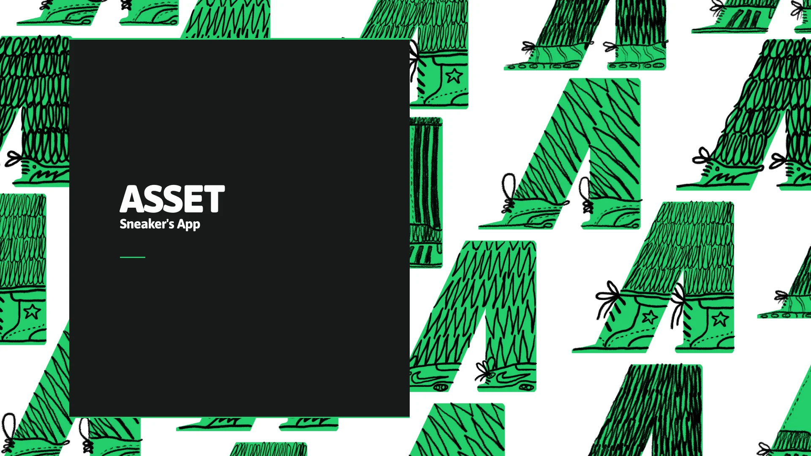
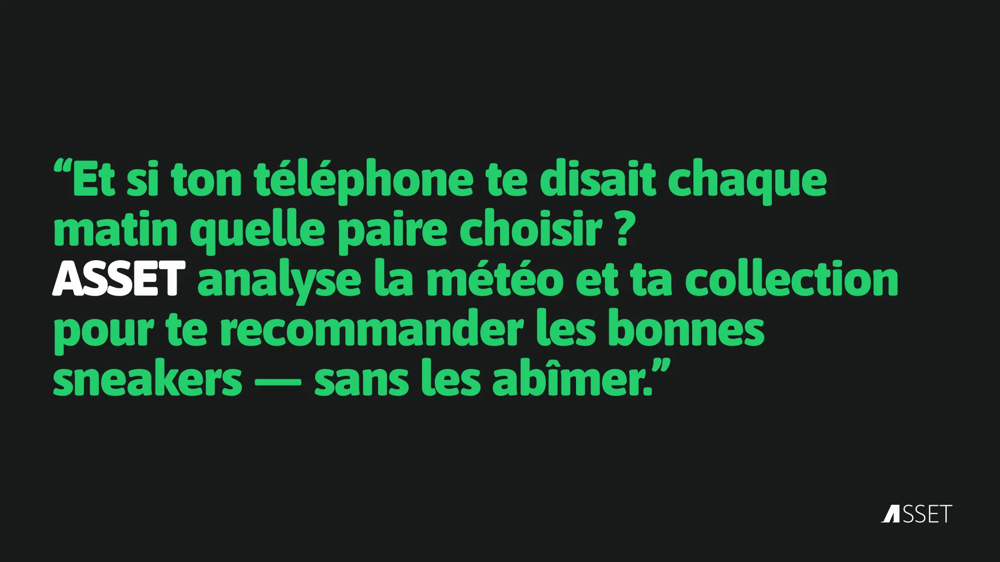
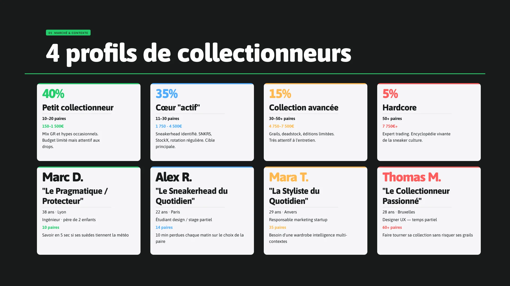
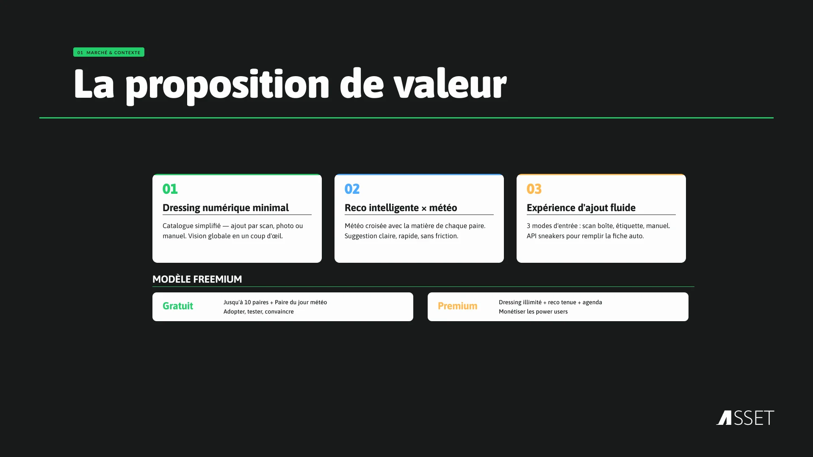
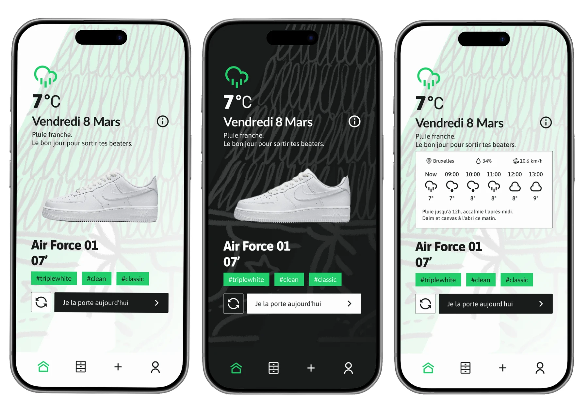
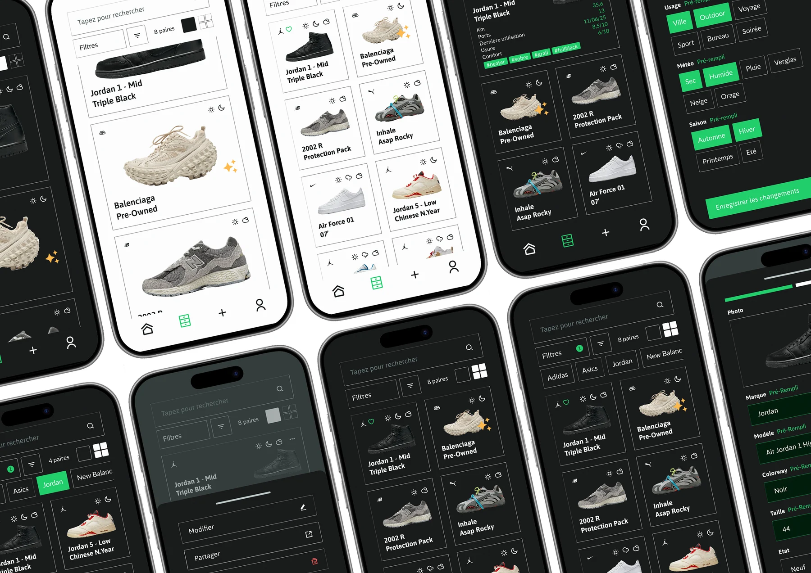
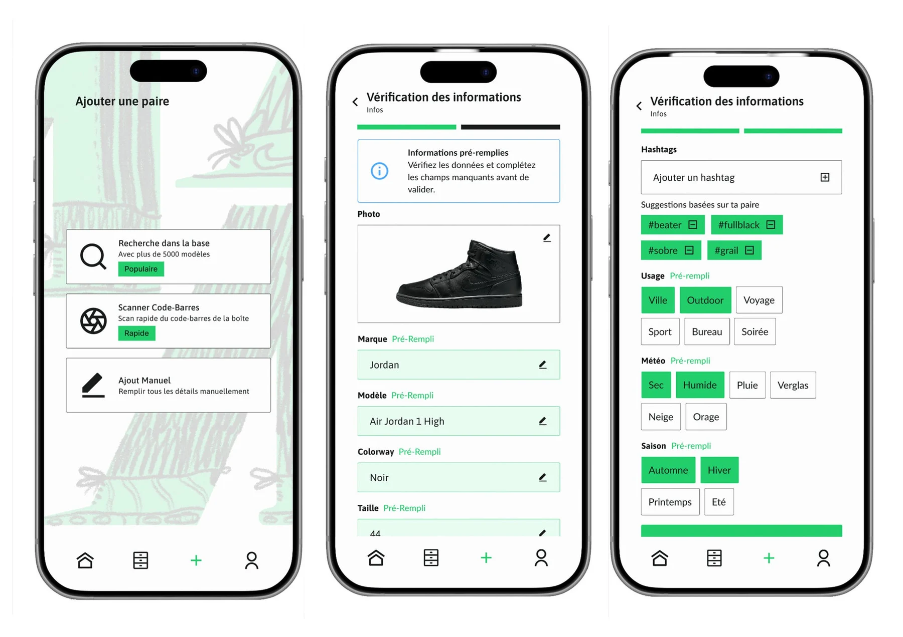
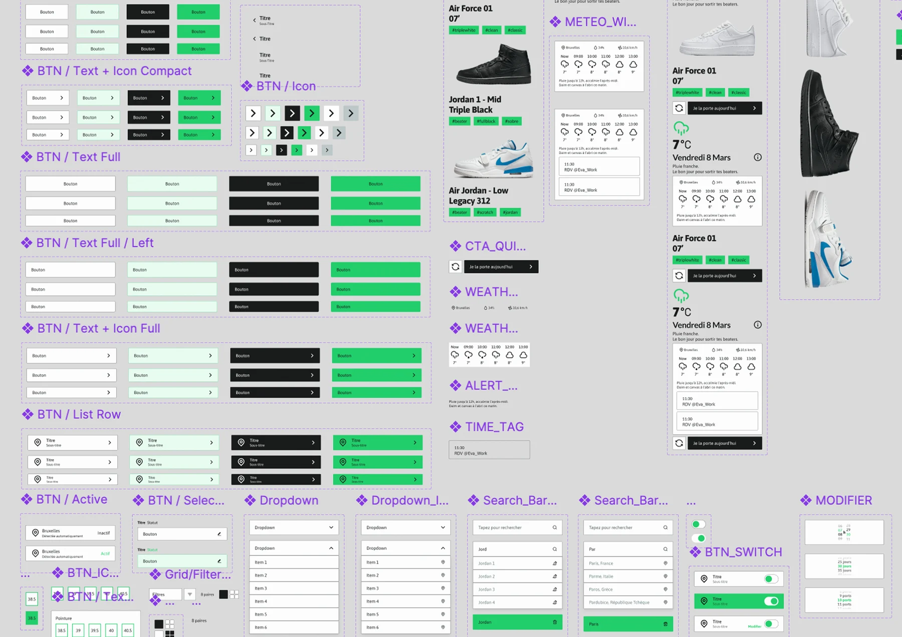

ASSET — concevoir l'app que les sneakerheads attendaient sans le savoir

Quelle paire aujourd'hui ? En moins de 3 secondes. C'est la promesse fondamentale d'ASSET — et le fil rouge de chaque décision de design.
Les sneakerheads gèrent leur collection dans des tableurs, des notes ou dans leur tête. Chaque matin, même question : quelle paire sortir sans risquer de la ruiner sous la pluie ? Aucune app ne croisait vraiment météo, matériaux et rotation.
ASSET répond à ce vide : un dressing numérique intelligent, une recommandation quotidienne argumentée, une expérience conçue par et pour la culture sneaker.
Product designer solo, de la recherche UX jusqu'aux maquettes haute fidélité. Définition de la vision produit, structuration du modèle freemium, construction du design system et conception des flux core MVP.
- L'authenticité culturelle. Une app crédible pour des utilisateurs qui repèrent immédiatement le faux pas de vocabulaire ou l'interface générique.
- Le rituel du choix. Choisir ses sneakers est un moment de plaisir, pas une corvée. L'app suggère — le sneakerhead décide toujours.
- Le design system from scratch. Dark mode dominant, vert accent
#23CE6B, 24 composants documentés avant le premier écran. - Le modèle freemium. Une expérience complète sur le tier gratuit, sans brider la valeur premium.
- La recherche d'abord. 4 personas validés (du collectionneur hardcore au pragmatique pressé), card sorting, benchmark concurrentiel, étude marché quantitative.
- Design system avant les écrans. Couleurs, tokens, typographie, composants : la grammaire du produit avant ses phrases.
- L'itération low-fi → high-fi. Wireframes à grande vitesse, puis maquettes au pixel près.
Un design system complet et documenté, 92+ écrans haute fidélité, une recherche UX exhaustive — et un produit qui tient sa promesse fondamentale : quelle paire aujourd'hui, en moins de 3 secondes.






